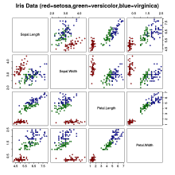
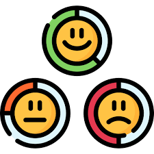
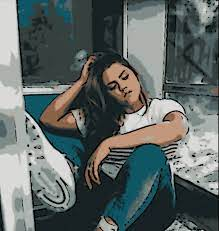

Hello, I am Aaranyak Santra
and I am a passionate AI Engineer.

PROJECTS

IRIS Flower Dataset
In this project, I made a model to predict the species of the flower using the characteristics
given in the dataset. I used Linear regression and svm to train the model and find the accuracy.
Also I have used matplotlib to do data exploratory analysis by visualizing the relationship
between sepal length and sepal width, petal length and petal width.
Credit Card Fraud Detection
In this project, I trained the model and tested the accuracy to detect which transaction is
fraud and which is not fraud. The features in the dataset are scaled and hidden due to privacy
reasons. I had to preprocess the dataset and build a binary classification model with the
undersampled and oversampled data. At first, the dataset was heavily skewed so I had to balance
the dataset. I also found the correlation between features to remove those which are highly
correlated and also reduced outliers. I used t-SNE(t-Distributed Stochastic Neighbour Embedding)
for data exploration and visualize high dimensional data. I have trained the model in four
classifiers or machine learning algorithms - Logistic Regression, SVC, KNearest, and Decision
Tree Classifiers. At last, I used the CNN model with one hidden layer for both separate
undersampled and oversampled(SMOTE) datasets and for SMOTE the accuracy is more.
NIFTY-50 STOCK MARKET analysis of BAJAJFINSV stock
In this project, I have used the auto ARIMAX model for training the dataset of BAJAJFINSV stock.
The target feature in this project is VWAP(volume weighted average price) which tells about the
price of the stock the entire day. I have used log features on the window size of 3 days, 7
days, and 30 days. At last I encountered some error because I had combined two features into one
which is needed to find the root mean square error. To visualize the VWAP I have used
matplotlib.

Sentiment Analysis(IMDB reviews)
In this project, I made a model and trained it on the dataset to predict the sentiments of the
public reviews on movies. I preprocessed the dataset to remove the imbalance in the dataset and
then used Logistic Regression, SVM, and Naive Bayes to train the model and then find the
accuracy. I have used confusion matrix to visualize the matrix. In this model SVM has the
highest accuracy. The model will give you response like - (positve or negative sentiment) based
on public review.
Uber Data Analysis
Uber has emerged as a leading company in transportation options around the world.They are
providing services to connect the supply and demand. Data analysis and visualization are some
important domains and big corporations can benefit from this by making good business decisions
based on the analysis. We will apply EDA(exploratory data analysis) to the dataset

Cartooning Using OpenCV
The purpose of this project was to make a simple comic of a photo uploaded using OpenCV.
Wine Quality analysis
In this project, I made a model using logistic regression, XGBClassifier, SVC to find the
accuracy of the model trained on the particular dataset. I have used matplotlib and seaborn for
data visualization, and data preprocessing, exploratory data analysis and for training I used
the three models. I have also used confusion matrix and classification report for model
evaluation. The purpose of this project was to find the quality of the wine by using the
features like volatile acidity, SO2, citric acid, alcohol, etc. given in the dataset.
Dogecoin Price Prediction
In this project, I used the SARIMAX model(Seasonal AutoRegressive Integrated Moving Average with
eXogenous regressors) to demonstrate the time-series analysis. Before training the dataset on
the model I extracted my own features from the pre-defined features and also removed those
features which were highly correlated. At last I used the matplotlib to demonstrate the relation
between close feature and time series.